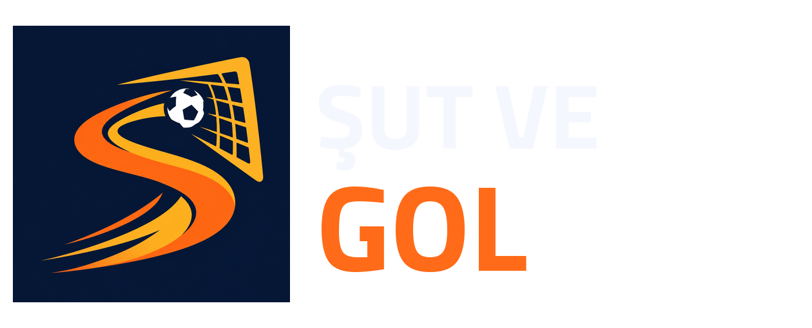

MARKA KİMLİĞİ
Her şut bir şans.

S biçimli şut yolu, top ve kale. Şut ve Gol’ün tek işareti hız, hedef ve gol anını birlikte anlatır.
Marka kitini indirRenkler
#07142F
Gece laciverti · ana zemin
#FF6B18
Şut turuncusu · vurgu
#F5F7FF
Top beyazı · yazı ve amblem
Tipografi ve kullanım
Oyunda Titillium Web kullanılır. Logo çevresinde top çapının en az yarısı kadar boşluk bırak. Amblemin oranını değiştirme, efekt ekleme veya farklı bir top kullanma. Uygulama ikonu için opak kare sürümü; yayın ve iletişim için şeffaf SVG/PNG logoyu kullan.
16 parçalık ikon ailesi
24 × 24 ızgara, 1.8 px çizgi ve yuvarlak uçlar. SVG dosyalarında currentColor kullanılarak arayüze uyarlanır.